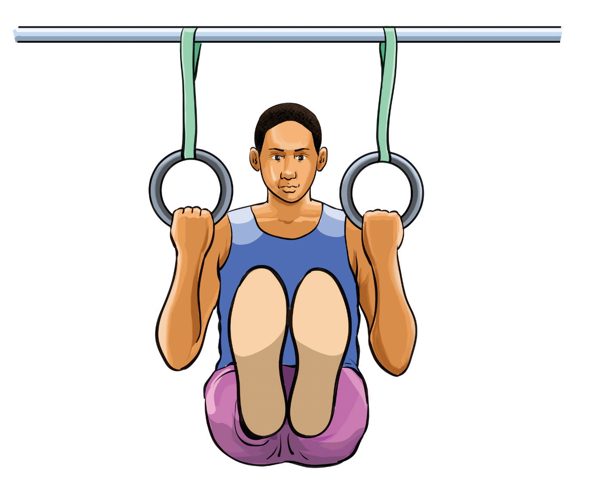

Tucked pull over
A tucked pullover is a fundamental bar skill where a gymnast starts from a hanging position, pulls their legs up in a tuck, and rotates around the bar to end in a front support position on top of the bar. This skill is commonly taught to beginners on uneven bars as it helps develop strength and body control for more advanced bar skills. The following steps will help you practice a tucked pull over:
- (i) Stand under the low bar and grab it with an overhand grip with hands shoulder width apart;
- (ii) Hang with arms straight and feet slightly off the ground while engaging your core and arms;
- (iii) Pull your knees toward your chest in a tight tuck position keeping your chin tucked and eyes looking toward the bar;
- (iv) Push with your arms as the hips get closer to the bar to help rotate your body over keeping legs tucked and letting your back roll over the bar smoothly, Figure 4.34; and
- (v) Finish by extending your arms as you press your hips onto the bar, straighten the legs ending in a front support position.

Activity 4.31
Search from the internet and other sources on how to execute a tucked pull over and practice it repeatedly until you master the skill.
SPORTS STUDIES FORM TWO.indd 140
9/17/25 9:54 AM